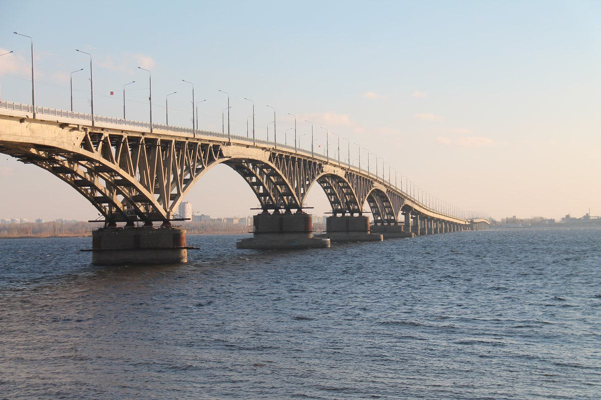

Волгу условно делят на три географических положения:
- Верхняя Волга
- Средняя Волга
- Нижняя Волга
Подробнее о великой Русской реке

Волга — река в европейской части России (небольшая часть дельты Волги, вне основного русла реки, находится на территории Казахстана). Одна из крупнейших рек на Земле и самая большая по водности, площади бассейна и длине в Европе, а также крупнейшая в мире река, впадающая в бессточный (внутренний) водоём
Длина реки составляет 3530 км (до постройки водохранилищ — 3690 км), а площадь водосборного бассейна — 1360 тыс. км²[9]. Годовой сток составляет 254 км³
На Волге расположены четыре города-миллионера (от истока к устью):
В 1930-х — 1980-х годах на Волге было построено восемь гидроэлектростанций, являющихся частью Волжско-Камского каскада.
Прилегающая к Волге часть территории России называется Поволжьем.
Подробнее о великой Русской реке